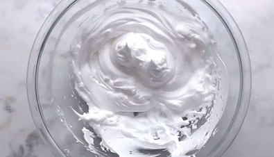
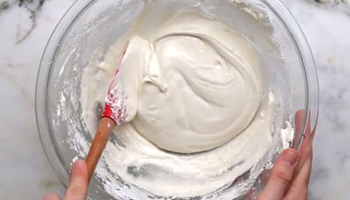
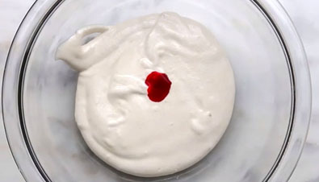
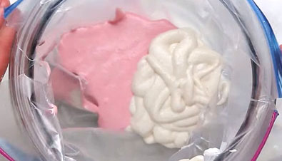
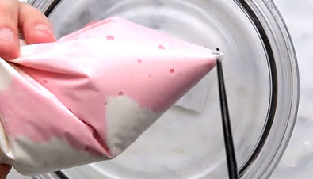
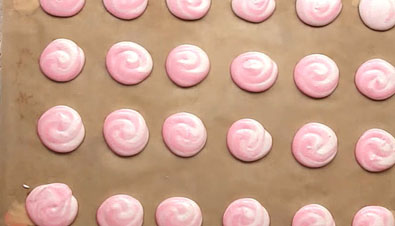
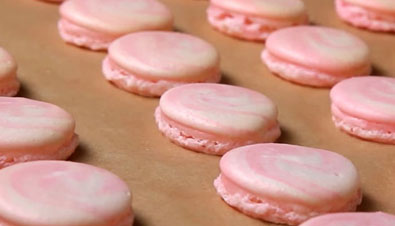
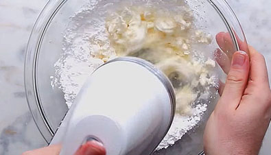
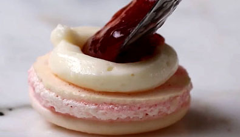

СОЛОДКІ РЕЦЕПТИ
Макаруни простий рецепт

Інгредієнти :
Яйце 3шт.
Цукор 50гр.
Цукрова пудра 550гр.
Барвник за смаком
Сир вершковий 230 гр.
Молоко 3ст.л.
Джем 3 ст. л.
Опис
Це мигдальні печеньки, які настільки красиво виглядають, що здатні вже одним тільки своїм видом привести в захват абсолютно всіх.
Але, на смак макаруни такі ж неймовірні, особливі і оригінальні. Макаруни готують з мигдального борошна, яке не зовсім просто дістати
в звичайних супермаркетах, воно досить дороге, але побалувати себе чудовим десертом іноді можна. Існує думка, що справжні макаруни можуть
приготувати тільки досвідчені кондитери з великим досвідом, але не варто боятися, беріться за приготування цих чудових печеньок,
адже ми приберегли для вас простий рецепт макарунів, за яким вони обов'язково вийдуть з першого разу.
Приготування

Макаруни готуються не так складно, як може здатися на перший погляд, але все ж це повітряне печиво досить примхливе і при найменших помилках
можуть не вийде такими, як ми всі звикли їх бачити. Отже, почнемо з приготування меренги, на основі якої готується класичні макаронс.
Не будемо сильно заморочуватися над кулінарними хитрощами у виборі між заварною італійською або ж французькою меренгою, і просто акуратно
відокремимо яєчні білки від жовтків, після чого зіб'ємо їх міксером в пишну піну.

Потім додамо трохи цукру і продовжимо збивати до гострих піків. Тепер просіюємо в цю ж ємність трохи цукрової пудри і мигдалеве борошно,
після чого акуратно перемішуємо вміст лопаткою до отримання однорідної, ніжної маси середньої консистенції.

На цьому етапі додамо трохи фарб, адже макаруни - це печиво, яке буває абсолютно всіх кольорів веселки і завдяки своїй красі широко
використовується, як прикраса для багатьох інших десертів.

Отже, для того, щоб додати колір нашого тіста для макарунів, додамо кілька крапель рідкого харчового барвника. В даному рецепті ми
використовуємо рожевий. Перед тим, як пофарбувати тісто, рекомендуємо поділити його на дві частини і одну залишити світлою. Тепер
помістимо в кондитерський мішок обидві маси і на деко, застелене пергаментним папером, акуратно відсадити наші печеньки.

Завдяки тому, що ми з'єднали світле і рожеве тісто, макаруни у нас виходять неймовірно красивими. Дуже важливий момент -
після того, як на деку виявляться наші макаруни, його потрібно кілька разів струсити і злегка вдарити об стіл, щоб пішло зайве повітря,
а також розтеклися хвостики.

Якщо цього не зробити при випіканні печеньки можуть просто розтектися і втратити потрібну форму. Тепер залишаємо деко при кімнатній температурі,
не накриваючи, на одну годину. За цей час на макарунах повинна утворитися характерна скоринка, доторкнувшись пальчиком, тісто не повинно прилипати.
Якщо ж це трапляється, залишаємо наш десерт ще дозрівати хвилин на 15-20.

Після цього ставимо деко в розігріту до 140 градусів духовку і залишаємо готуватися на 15 хвилин. Під час випікання печиво піднімається і перетворюється в пишні,
ароматні штучки.

Поки вони випікаються, приготуємо смачну начинку, яка є обов'язковим компонентом цього десерту. В даному рецепті ми використовуємо вершковий сир (маскарпоне, риккота),
який збиваємо за допомогою міксера з цукровою пудрою і чуточкой молока. В результаті у нас виходить ніжна кремоподібна маса, що не густа, але дуже добре тримає форму.

Готові макаруни дістаємо з духовки, даємо їм трохи охолонути, а потім на одну печеньку красиво видавлюємо по колу нашу начинку, а всередину її ще додаємо трохи полуничного джему.
Таке поєднання подарує нашому десерту просто неймовірний смак. Отже, з'єднавши попарно таким чином наші печеньки, можна сміливо запрошувати до столу домочадців, щоб вони сповна
насолодилися цим твором кондитерського мистецтва.